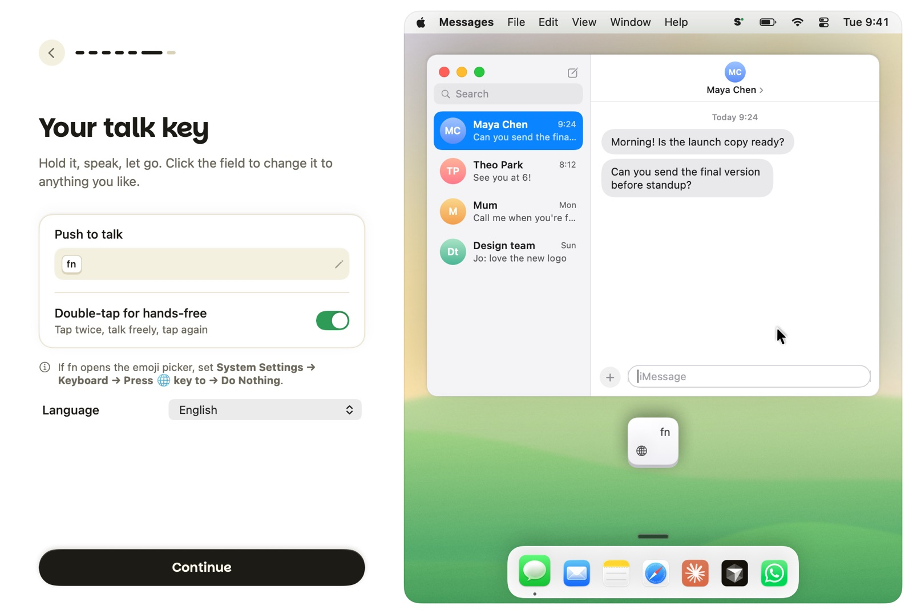

Hold a key, talk naturally, and Sotto writes it for you, cleaned up and in your style, in any app on your Mac.

Most people speak about four times faster than they type. Sotto turns that into finished text, wherever your cursor is.
Let go and your words appear, punctuated and cleaned up. Double-tap fn to keep talking hands-free.
Audio streams while you speak, so text lands about 0.2 seconds after you stop.
Select text, hold fn + ⌃ and say “make this friendlier” or “turn it into bullets”.
Prompts for coding agents, replies in Slack, proper emails in Gmail. Formatted for each.
Your dictionary, snippets and style per app. Fixes “scratch that” and “um” for you.
Run fully on your Mac, or bring your own Groq key. No account. History stays on your Mac.
Sotto isn't on the App Store yet, so macOS asks you to confirm the first time you open it.
Open the downloaded DMG and drag Sotto into your Applications folder.
Open Sotto. If macOS says it can't verify the developer, go to System Settings → Privacy & Security and click Open Anyway.
Grant microphone and accessibility access, pick your engine, and you're dictating.
Tip: if fn opens the emoji picker, set System Settings → Keyboard → “Press 🌐 key to” → Do Nothing.